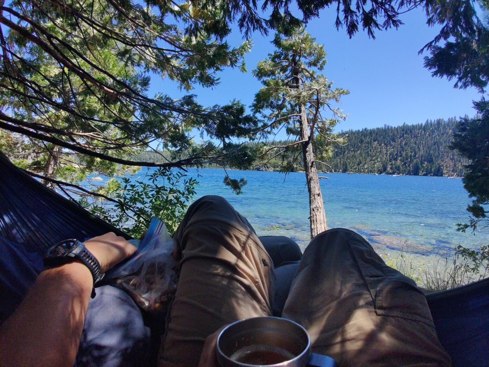

Why 101 deserves a weekend of its own
Most people drive the Oregon Coast between two other things — Portland to a wedding, Seattle to a surf break. That's fine, and they'll see enough to decide they want to come back. But the north coast of Oregon, specifically the 60-mile stretch between Astoria and Tillamook, rewards a slow weekend and a tide chart.
This trip was that weekend. Two days on 101. A tight list of stops. Nothing photogenic enough to rush for.
Stop 1 — Hug Point State Recreation Site
Hug Point sits just south of Cannon Beach. Before US-101 existed as a paved highway, stagecoaches ran the beach here at low tide, rounding a basalt headland by literally hugging the point — hence the name. The tracks they chiseled are still visible if you know where to look.
The modern reason to stop: a sea arch that opens up as the tide pulls back and a pair of tidefalls — small waterfalls that drop straight off the cliff onto the sand. At minus-tide you can walk behind the waterfall. At high tide you absolutely cannot — the point cuts off, and people get caught every year.
What we actually did
Parked at the state park lot. Walked the trail to the beach, then turned north toward the point. Found the arch about 15 minutes in. Waited for a clean wave cycle to walk through. Watched a heron work a tide pool without panic, which is how you know the weather is settled. Walked back before the water hit the south side of the point.
Stop 2 — Cape Meares
About 45 minutes south, through Tillamook, a narrow road winds up to Cape Meares State Scenic Viewpoint. The Cape Meares Lighthouse — Oregon's shortest at 38 feet — sits at the edge of a 200-foot cliff. On a clear day you can see Three Arch Rocks offshore, which is the closest thing the coast has to a seabird metropolis: murres, puffins, cormorants, loud.
The cliff trail connects the lighthouse to the Octopus Tree, a Sitka spruce whose trunk splits into six upward-curling limbs, each itself the size of a normal tree. Nobody is sure whether the shape is natural or deliberately cultivated by coastal Tillamook people centuries ago. It's a short walk. Do it.

How we ran a coastal FJ weekend
The FJ13 doesn't need four-wheel-drive for any of this. It's Highway 101, paved two-lane. What the rig does help with is the second half — the dispersed camping on national forest spurs west of 101 where cell service drops and the road surface goes from pavement to gravel to dirt.
Our overnight was on Tillamook State Forest roads, not on the coast itself. Oregon's coastal state parks sell out months in advance in summer; in shoulder season, dispersed camping in the forest just inland is a better experience anyway.
If you only have one day
- Morning at Hug Point (check tides).
- Lunch in Manzanita or Nehalem — Manzanita for cleaner, Nehalem for cheaper.
- Afternoon at Cape Meares.
- Sunset at Cape Lookout, 25 minutes south — 400 ft cliff, unobstructed.
What to pack for a coast weekend
- Waterproof shell — not "water resistant". The Pacific doesn't care.
- Traction shoes with reasonable tread. Wet basalt is glass.
- Offline maps — cell service is patchy between Nehalem and Tillamook.
- A printed tide chart. Seriously.
- Binoculars for Three Arch Rocks — in summer, the puffins are unreal.
Resources
- Oregon Parks & Recreation — Hug Point / Cape Meares
- Oregon Coast Visitors Association — 101 driving guide
- NOAA Tide Predictions — Cannon Beach, OR